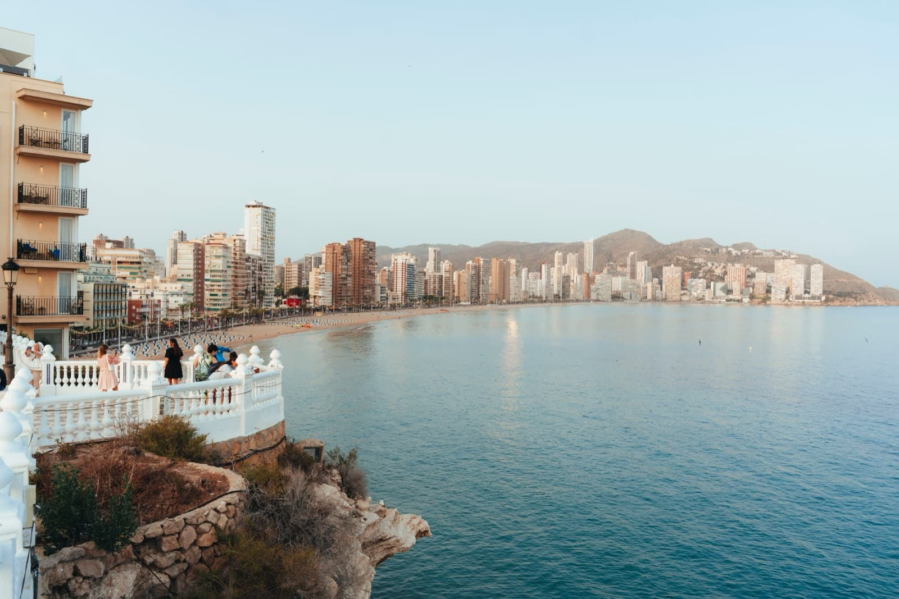
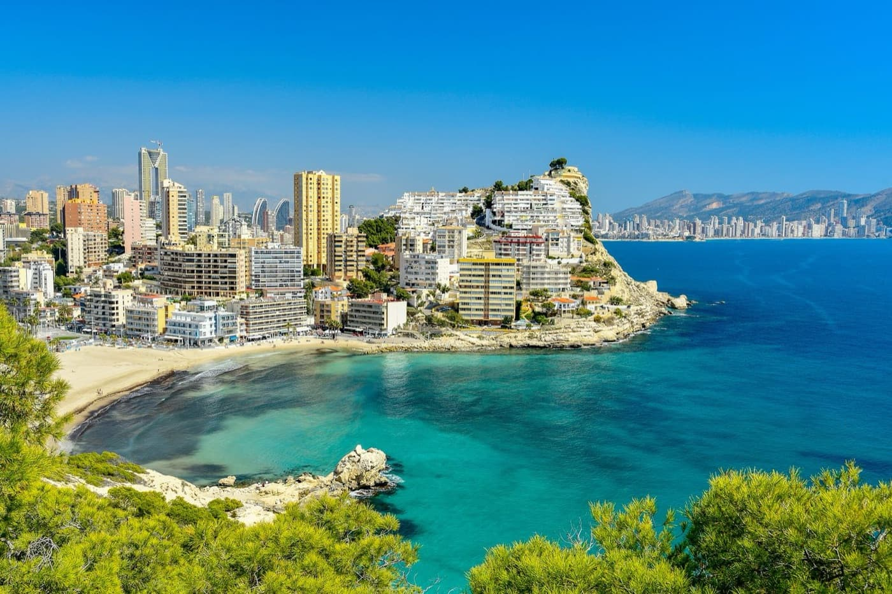
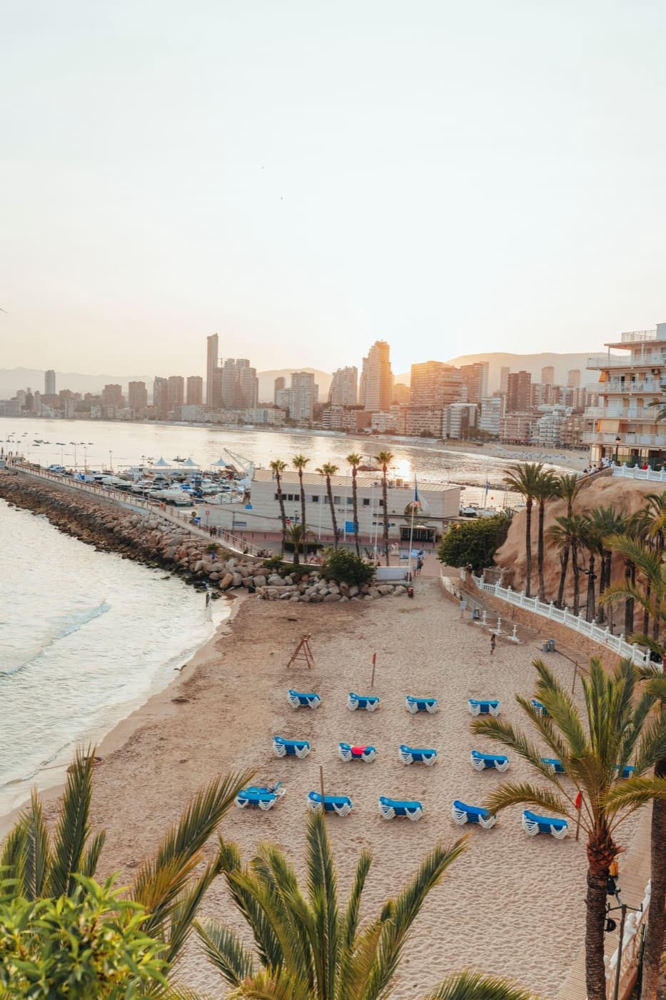
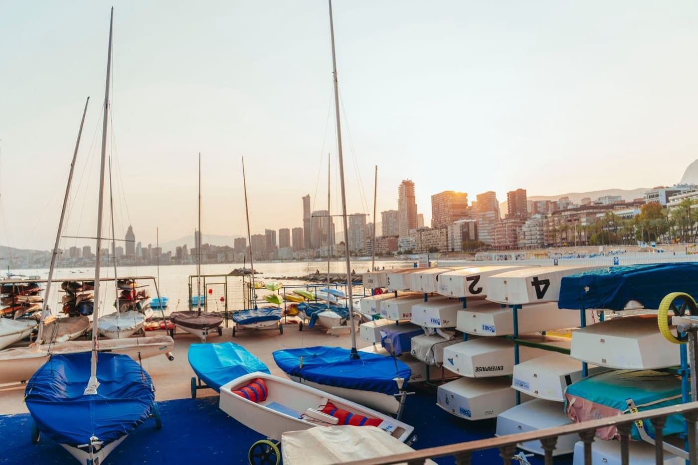

Benidorm
Two sweeping bays, 300+ days of sun and a skyline like nowhere else. Here's where our homes are, and what to do around them.
The neighbourhoods

Playa de Levante
The lively golden crescent, sun all day, promenade cafés, and the buzz of the resort at its best.
Good for beach life, nightlife, restaurants
1 home in Playa de Levante
Playa de Poniente
The calmer, wider bay, family sands, the Intempo skyline and long sunset walks.
Good for families, sunsets, space
1 home in Playa de Poniente
Casco Antiguo
Whitewashed lanes, tapas bars and the Balcón del Mediterráneo between the two beaches.
Good for tapas, character, views
1 home in Casco Antiguo
Rincón de Loix
Quieter resort complexes with pools, a short stroll to the far end of Levante beach.
Good for pools, quiet, value
1 home in Rincón de Loix
- Cala de Finestrat
- A sheltered sandy cove just west of Poniente, with its own promenade of cafés and a slower pace.
Good for calm water, families, evenings by the sea
1 home in Cala de Finestrat - Sierra Cortina
- A residential hillside between Benidorm and Finestrat, beside the golf courses and close to Terra Mítica, with long views down to the bay.
Good for golf, space, views
1 home in Sierra Cortina
Things worth doing
- The Balcón del Mediterráneo
- The white viewpoint between the two beaches, the classic Benidorm postcard at sunset.
- Old-town tapas
- Wind through the casco antiguo for tascas, vermút and the freshest seafood.
- Sierra Helada trails
- Walk the cliffs above Levante for views across the whole bay to the island.
- Isla de Benidorm
- Hop the little ferry to the island for snorkelling and a slower afternoon.
- Theme parks
- Terra Mítica, Aqualandia and Terra Natura, a short drive, big day out.
- Poniente sunsets
- The wide western beach is the place to be as the sun drops into the sea.
Benidorm in pictures

The bay from above 
A hidden cove 
Palm-lined shores 
Golden hour on the beach 
Sailing boats by the port 
An unmistakable skyline
Find your home base in Benidorm
Tell us your dates and who's coming. We reply personally, usually within the hour.